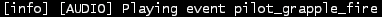

Sound Modding¶
Audio Type¶
- You will need to use
WAVformat and either48000hzor44100hzsample rate. - More details below in creating_your_sound
Step 1 - Identifying the Sound¶
First you need to identify the exact sound. There's a command for this:
ns_print_played_sounds 1 It will show all the audio events that
are happening at that moment on the console.
For example, use your Grapple and open the console the event ID will be
pilot_grapple_fire
How it looks in the console: 
All weapons, boosts, tacticals have different events IDs on different surfaces (concrete, solidmetal, wood, dirt etc.) That's why you must identify the exact event/s. Examples based on Grapple:
- Concrete impact:
concrete_grapple_impact_1p_vs_3p - Solidmetal impact:
solidmetal_grapple_extract_1p_vs_3petc.
NOTE: ns_print_played_sounds 1 will show you every event ID. Not
just in-match ones. For example:
- The sound when you move the cursor to an option it will be
menu_focus, and clicking sound will bemenu_acceptor menu musicmainmenu_music
Check the console often, as it's easy to miss your sound - there can be a lot of sounds playing.
There's also a list of all EvenIDs (audio).
Sounds can be played in-game from the console via script_ui EmitUISound(soundname).
Additionally subtitles in the form of plain text can also be useful.
You can also export sounds with LegionPlus instead of playing them in-game.
Open LegionPlus.exe -> Load File -> Titanfall 2/r2/sound pick general.mbnk
If you want to export only a specific sound use search. It's possible to export selected sounds and all (after a search it exports only the found assets).
Step 2 - Creating Folders¶
When you successfully identified your event and have the audio file/s
ready it's time to set up the folder structure.
Assuming the event name is pilot_grapple_fire, the folder structure of your mod should look like this:
author.mod/
├── audio/
│ ├── pilot_grapple_fire/
│ │ └── my_audio.wav
│ └── pilot_grapple_fire.json
└── mod.json
Example of a mod.json (documented here: Getting Started)
{
"Name": "MOD_NAME_HERE",
"Description": "DESCRIPTION_HERE",
"Version": "0.1.0",
"LoadPriority": 2
}
Inside the audio/ folder:
pilot_grapple_fire/folder which needs to contain your .wav file(s)pilot_grapple_fire.jsonjson used to configure the sound override, dont forget to edit.
You will have to add that folder with your sound and the json for each event you want to override.
The event JSON files must contain both EventId and AudioSelectionStrategy like this:
{
"EventId": [ "pilot_grapple_fire" ],
"AudioSelectionStrategy": "sequential"
}
The AudioSelectionStrategy can be either:
sequential: If you have one sound or you want to play them in alphabetical order.random: If you have more than one sound and you want to randomize them.
Creating Your Sound¶
- Recommended tool: Audacity
Open/Add your audio as a track to Audacity and set the project rate accordingly.
Either 48000hz or 44100hz can work well in most cases, but a few sounds don't use either. Which sampling rate you should use depends on the original sound's sampling rate.
For example: if you use 44100khz and the sound is slightly too high pitched in game, use 48000khz. If you use 48000khz and it's slightly low pitched in game, use 44100khz.
If you're unsure which to use, or the sound still seems too high, or low pitched, you can use LegionPlus to determine the original rate.
After that, export your track as a 16-bit wav file (any other bit-depth will cause Northstar to crash).
Make sure you don't add any metadata as this will cause white noise to be at the end of the sound.
Issues With Sounds¶
- White noise after the sound ends.
This is usually because there's some metadata left in the audio. Remove it to fix this issue.
You can bulk remove it with Mp3tag or individually with Audacity.
You can bulk remove it with Metadata Cleaner or a shell script (requires ffmpeg to be installed) and also individually with Audacity.
metadata_remover.sh (WAV only)
Script
shopt -s globstar nullglob
for f in *.wav **/*.wav
do
ffmpeg -i "$f" -map 0 -map_metadata -1 -c:v copy -c:a copy "${f%.wav}.new.wav"
mv -f "${f%.wav}.new.wav" "$f"
done
- Sound is slightly higher/lower pitched in game. This is usually because the sampling rate of your sound doesn't match the original sound's sampling rate. You can use a tool like Audacity to resample your sound to match the original rate. Consult
_creating_your_soundfor more information.
Sound Tools¶
- Converters
# todo
On Linux you can use shell scripts that convert all WAV or MP3 audio files from the current directory (including folders) to WAV 48000Hz 16-bit. They require ffmpeg to be installed.
MP3 and other formats scripts don't delete previous files, so just search for them (.format) and delete after conversion. WAV script automatically replaces old files.
#WAV to WAV 16-bit 48000 Hz.
#wav_converter.sh
shopt -s globstar nullglob
for f in *.wav **/*.wav
do
ffmpeg -i "$f" -acodec pcm_s16le -ar 48000 "${f%.wav}.new.wav"
mv -f "${f%.wav}.new.wav" "$f"
done
#MP3 to WAV 16-bit 48000 Hz.
#mp3-wav_converter.sh
shopt -s globstar nullglob
for f in *.mp3
do
ffmpeg -i "${f}" -vn -c:a pcm_s16le -ar 48000 "${f%.*}.wav"
done
#Replace .format with the one you want to convert.
#format-wav_converter.sh
shopt -s globstar nullglob
for f in *.format
do
ffmpeg -i "${f}" -vn -c:a pcm_s16le -ar 48000 "${f%.*}.wav"
done
Installation¶
- As with any mod, the folder which contains your
mod.jsonneeds to be insideTitanfall 2/r2Northstar/Mods/.